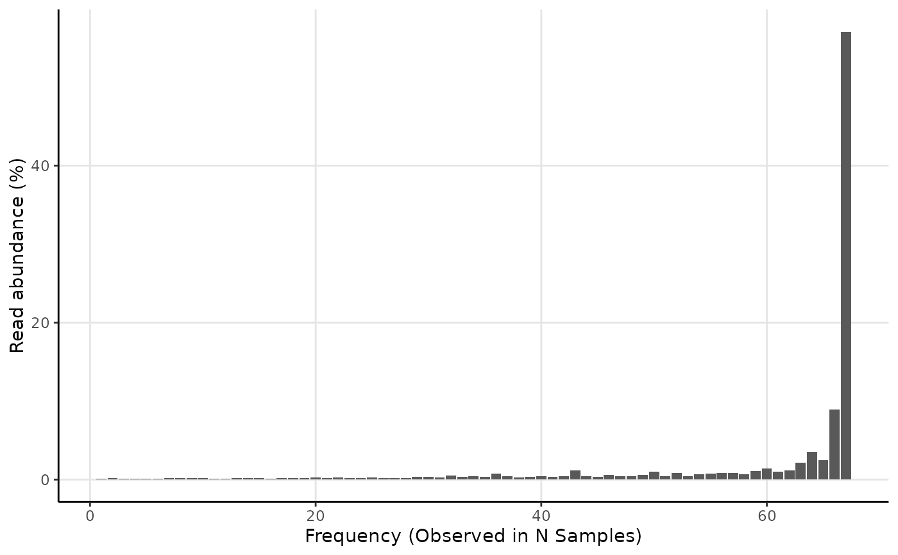

Generates a barplot with frequency vs read abundance.
amp_frequency(
data,
group_by = "Sample",
tax_class = NULL,
tax_empty = "best",
tax_aggregate = "OTU",
weight = TRUE,
normalise = TRUE,
detailed_output = FALSE
)(required) Data list as loaded with amp_load.
Group the samples by a variable in the metadata. (default: "Sample")
Converts a specific phylum to class level instead, e.g. "p__Proteobacteria".
How to show OTUs without taxonomic information. One of the following:
"remove": Remove OTUs without taxonomic information.
"best": (default) Use the best classification possible.
"OTU": Display the OTU name.
The taxonomic level to aggregate the OTUs. (default: "OTU")
(logical) Weight the frequency by abundance. (default: TRUE)
(logical) Transform the OTU read counts to be in percent per sample. (default: TRUE)
(logical) Return additional details or not. If TRUE, it is recommended to save to an object and then access the additional data by View(object$data). (default: FALSE)
A ggplot2 object. If detailed_output = TRUE a list with a ggplot2 object and additional data.
See ?amp_filter_samples or the ampvis2 FAQ.
Saunders, Aaron M; Albertsen, Mads; Vollertsen, Jes; Nielsen, Per H (2016): The activated sludge ecosystem contains a core community of abundant organisms, ISME Journal 10, 11-20. doi:10.1038/ismej.2015.117
# Load example data
data("AalborgWWTPs")
# Frequency plot
amp_frequency(AalborgWWTPs)
